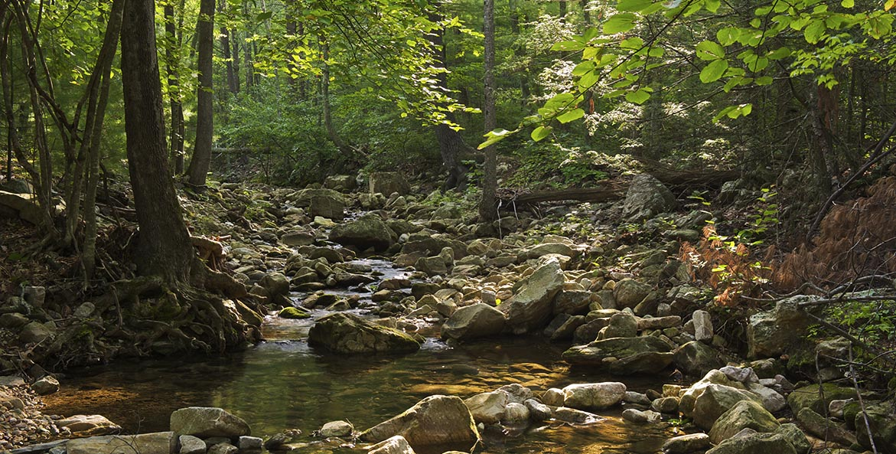

Лето – чудесное время года. Долгие солнечные дни сменяют короткие теплые ночи. Чаще всего стоит ясная погода, и бескрайнее синее небо простирается над головой. Деревья пышно убраны в яркие зеленые одежды.

Осень – самое разноцветное время года, самое насыщенное краскам, и поэтому многие считают его самым красивым. В начале осень ещё напоминает лето: такая же зелёная, цветущая пёстрыми астрами и георгинами пора. Но проходит немного времени, и всё начинает желтеть. Вот и листья меняют свой цвет.
Зима - часто начинается с холодных ветров и солнечных морозных дней, пришедших на смену дождливой поздней осени. Уже давно сбросившие листья деревья погружаются в глубокий сон. ... Снег толстым белым ковром устилает крыши домов, ложится на ветви деревьев, а в воздухе еще кружатся большие снежинки. Замерзают реки.
Весна — это то время года, которого все ждут, устав от зимы. Весну часто называют долгожданной. Первые признаки весны, бывает, проявляются еще зимой, в феврале: чуть посильнее посветит солнышко — и начинают таять сосульки, звенит веселая капель, напоминая о приближении весны.
Лето
Осень
Зима
Весна